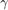
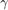

Linear Algebra Group Assignment
Authors: Tyce Olaveson and Levi Moats Class: Physics 530 Professor: Dr Transtrum Date: 02/26/2024
Consider the one dimenstional boundary value problem that arises in fluid dynamics
![$$-u''(x) + V(x)u'(x) = f(x), x\in[0,1]$$](main_eq12625388480741236538.png)
where

where we will take  to be constants:
to be constants:  and
and 
Contents
Problem Formulation
a) Using a test function , the above boundary value problem can be rewritten in the weak form as the following:
![$$A_1[\phi,u] + A_2[\phi,u] = F[\phi]$$](main_eq00182307570955008526.png)
where
![$$A_1[\phi,u] = \int_{0}^{1} \phi' \cdot u' dx$$](main_eq12445790906574176086.png)
![$$A_2[\phi,u] = \int_{0}^{1} v(x) \cdot u' \cdot \phi dx$$](main_eq08403486759626861935.png)
![$$F[\phi] = \int_{0}^{1} f \cdot \phi dx$$](main_eq05804388856437582391.png)
b) The "hat" functions from class,  , can be used to aproximate using linear combinations:
, can be used to aproximate using linear combinations:  . This allows the weak form of the boundary value problem to be written in the form:
. This allows the weak form of the boundary value problem to be written in the form:

where


From above
It can be shown that is a symetric tridiagonal matrix with  on the diagonal and
on the diagonal and  on the off diagonals. is a skew-symmetric tridiagonal matrix with 0 on the diagonal, on the upper off diagonal, and
on the off diagonals. is a skew-symmetric tridiagonal matrix with 0 on the diagonal, on the upper off diagonal, and  on the lower off diagonal.
on the lower off diagonal.
It can be shown that  is a vector is an n by 1 vector where all the values are .
is a vector is an n by 1 vector where all the values are .
c) A function CalcAandb.m has been written and is included in this repository. It accepts  and  as inputs and returns a sparse A matrix and
and  as inputs and returns a sparse A matrix and
Implement the GMRES algorithm
Examples from the text: A = [1 4 7; 2 9 7; 5 8 3]; b = [1;8;2]; x = [-2.18; 1.84; -0.6] b = [2;3;9]; x = [-2.1; -0.22; 0.11] b = [5;-3;8]; x = [4.8; -2.6; 1.5]
A = [1 4 7; 2 9 7; 5 8 3];
b = [1;8;2]; x = [-2.18; 1.84; -0.6]; x0 = zeros([3,1]); M = eye(3);
[xfit,er,V,H] = mygmres(3,b,x0,3,M,A);
disp(round(xfit,2))
disp(norm(er))
b = [2;3;9]; x = [-2.1; -0.22; 0.11]; x0 = zeros([3,1]); M = eye(3);
[xfit,er,V,H] = mygmres(3,b,x0,3,M,A);
disp(round(xfit,2))
b = [5;-3;8]; x = [4.8; -2.6; 1.5]; x0 = zeros([3,1]); M = eye(3);
[xfit,er,V,H] = mygmres(3,b,x0,3,M,A);
disp(round(xfit,2))
disp(' ')
break
-2.1800
1.8400
-0.5900
1.2583e-15
break
2.0800
-0.2200
0.1100
break
4.8000
-2.5600
1.4900
Solving the FEM problem
Use your GMRES function to solve the finite-element formulation of the variational problem for the cases  and
and  using
using  as the identity matrix. For each case, run with and increasing
as the identity matrix. For each case, run with and increasing  until the error (i.e., the norm of the residual divided by ) is below . Plot your most accurate solution (as a function of x) as well as teh error versus functions of and .
until the error (i.e., the norm of the residual divided by ) is below . Plot your most accurate solution (as a function of x) as well as teh error versus functions of and .
% define arrays ns = [16,32,64,128]; % number of basis functions to use ls = 2.^(1:7); % number of iterations Vs = {@(n) 1, @(n) n+1}; % set of different (constant) functions for errors = zeros([length(ls),length(ns),length(Vs)]); % empty matrix to store the errors solutions = cell(size(errors)); % empty cell array to store the solutions after they have been calculated xplot = cell([length(ns),1]); for i = 1:length(ns) xplot{i} = 0:1/(ns(i)+1):1; end % loop through each case for i = 1:length(Vs) V = Vs{i}; for j = 1:length(ns) n = ns(j); for k = 1:length(ls) l = ls(k); % create the input matrices [A,b] = CalcAandb(n,V(n)); [x,errors(k,j,i),~,~] = mygmres(l,b,zeros([n,1]),n,eye(n),A); solutions{k,j,i} = [0;x;0]; end % k = 1:length(ls) end % j = 1:length(ns) end % i = 1:length(Vs)
Produce the plot for
sq=squeeze(errors(:,:,1)); figure [X,Y] = meshgrid(ns,ls); surf(X,Y,sq) title("V(x) = 1","FontSize",16) ylabel("l","FontSize",14) xlabel("n","FontSize",14) zlabel("Error","FontSize",14) view([143.7,25.8]) snapnow;
Produce the plot for
sq=squeeze(errors(:,:,2)); figure surf(X,Y,sq) title("V(x) = n+1","FontSize",16) ylabel("l","FontSize",14) xlabel("n","FontSize",14) zlabel("Error","FontSize",14) view([143.7,25.8]) snapnow;
break break break break break break break break break break break break break break break break break break break